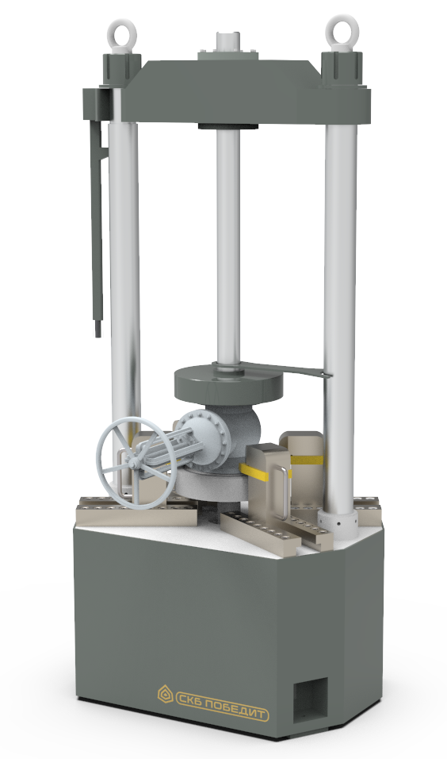

ПОБЕДИТ-С-2
Гидравлические и пневматические испытания трубопроводной арматуры;
Испытания на прочность и плотность материала корпусных деталей;
Испытание на герметичность узла затвора;
Испытания на герметичность относительно внешней среды;
Испытания на работоспособность.